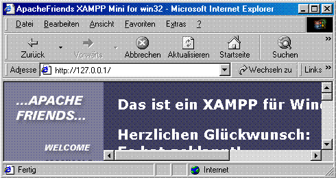
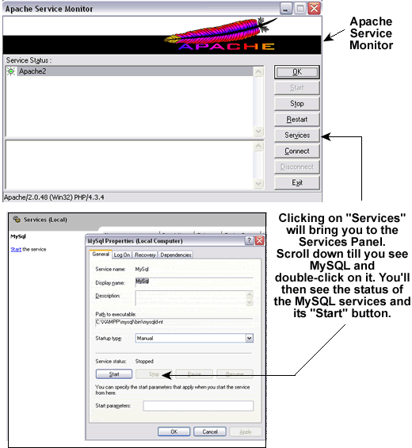

Click for Details
Click for Details
From Zero to AMP with XAMPP
NYPHP - PHundamentals
XAMPP is a packaging of Apache, MySQL, PHP and
other software (phpMyAdmin, etc.) that provides a rapid setup of an AMP development environment for either
Windows or Linux. The Windows package is an especially easy way to get started with
both learning and
development on home systems that run Win98, Win2K or XP.
And nothing is actually "installed" or written in the Windows registry, so it's very clean.
The information that follows highlights this ease of setup.
You'll find the complete
installation instructions on the
Apache Friends website to be very
straightforward.
Windows Install
Installing PHP/MySQL on Windows using XAMPP requires nothing more than mastering the following skills:
- Using an Internet Browser, such Internet Explorer, Mozilla, or Firebird
- Locating the xampp folder that was created by the extract
- Double-clicking on a few files
If you've got these basic skills, you're ready to go!
- Click on this link to download the latest version of XAMPP for Windows.
- The EXE (7-zip) is recommended. It is smaller (almost half the ZIP version) and also self-extracting.
- Download it to the C:\ directory, double-click on it and a dialogue box appears. Click the Extract button.
- Everything will be extracted to a created folder called "xampp" under the C:\ directory. (You could, if you like, place it in another subdirectory of your choosing.)
- Double-click on the file setup_xampp.bat which is in the subdirectory containing the XAMPP installation. Follow the directions it displays on the screen.
That's it! You're done! It's really that easy!
You can now test your installation by going to a browser and entering the following URL:
http://localhost
You will see something that looks like Figure 1 below.

Advanced Configuration for Windows NT/Windows 2000/Windows XP
The "Apache" and "MySQL"
folders created by the XAMPP installation will have batch files for installing Apache
and MySQL as services. Run these two batch files. Then create a shortcut in your Windows Startup
folder that points to the file "ApacheMonitor.exe" which is located in the
\apache\bin subdirectory. Finally, go to the Windows Control Panel and
configure these services - Apache and MySQL - to start manually.
You want to minimize the services that run automatically for security purposes.
The next time you start up your Windows machine, the Apache
Monitor will appear in your system tray. Double-click on it to open it up, click on the
button to start up Apache. Click on the Services button to bring up the Services
window to start MySQL. The ApacheMonitor is handy for when you want to restart Apache after making changes to
the php.ini. (See Figure 2 below)
A few helpful notes:
- The php.ini file in \xampp\apache\bin is the one to edit when PHP runs as an apache module
- Web pages go in the \xampp\htdocs directory (the DocumentRoot)
- Files for the XAMPP splash page are in \xampp\htdocs\xampp
- Default installation of XAMPP is "wide open", i.e., MySQL has no root password and register_globals is On
- If you can't see the flag icons to switch from German to English, change scrolling to "yes" in index.html
- After installing MySQL as a service, remember to copy \xampp\mysql\my_example.cnf to C:\my.cnf
- The file type may indicate a "SpeedDial" shortcut, but MySQL will treat it as a configuration file
Figure 2

Linux Install
While compiling your own versions of Apache, PHP and MySQL on a Linux box may be the preferred
way for advanced developers, XAMPP for Linux gets you up and running a lot quicker and is the
perfect solution for someone who is new to the world of LAMP.
- Click on this link to download the latest version of XAMPP for Linux.
- Download the compressed tarball to the /opt directory and run the "tar xvzf" command against it.
- Everything will be extracted to a created folder called "lampp" under the /opt directory.
- Run the shell script "/opt/lampp/lampp start" to get things going. Note the space between the words "lampp" and "start".
A few helpful notes:
- You'll find php.ini and httpd.conf files in the /opt/lampp/etc directory
- Web pages go in the /opt/lampp/htdocs directory (the DocumentRoot)
- Make sure that previously installed Apache/MySQL services, etc. are stopped
- Default installation of XAMPP is "wide open", i.e., MySQL has no root password.
- There's an easy way to handle security settings by running "/opt/lampp/lampp security". Again, note the spaces between the words.
You'll find additional information on XAMPP at http://www.apachefriends.org.
Contributors to this note include the following:
- John Lacey
- the PHundamentals team: Jeff Siegel, Mike Southwell
RELATED ARTICLES
free PHP thumbnail maker CSS & Javascript minify gzip pipeline online API and console
Free API and developer tools console for PageSpeed optimization.